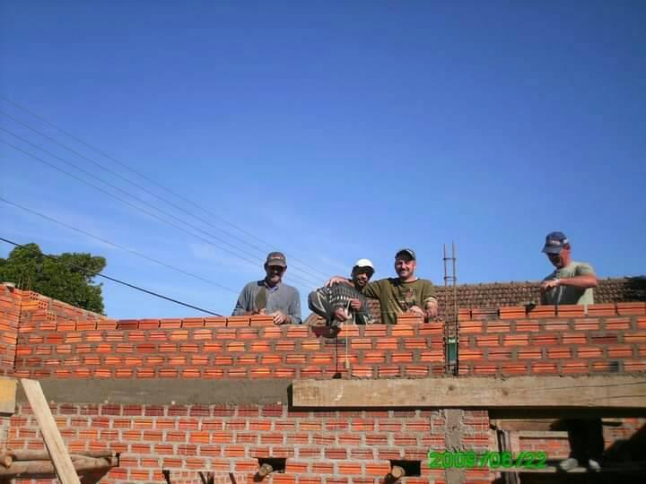

Início de 2009
Contrução do novo prédio

Com muito esforço, sacrificio e dedicação durante 2 anos de trabalho, perceberam o sucesso crescente de seu
negócio, Almiro Wally junto com seu filho Renato G. Wally perceberam que havia nescecidade de ampliação do seu
espaço. Então no inicio doano de 2009
dão o ponta pé inicial na construção de sua nova sede.